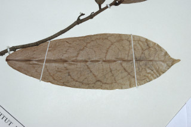
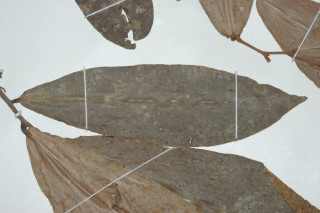
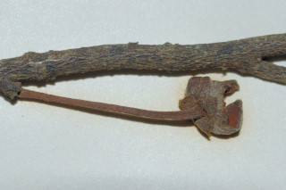
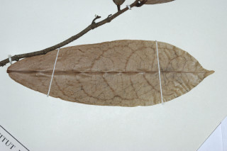
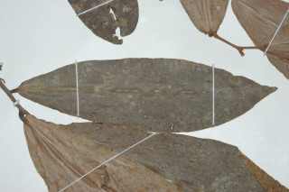
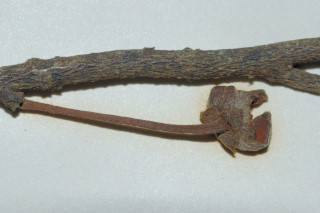

Images :
 





| Habit : | Shrubs or Small trees , ca. 5 m tall. |
| Leaves : | Leaves simple , alternate , distichous ; petiole to 0.3 cm long, nearly terete , pubescent , stout; lamina 10-20 x 3-6 cm, oblanceolate , apex caudate - acuminate , base nearly cordate , margin undulate , minutely pubescent or subglabrous beneath, glabrous above; secondary_nerves 8-10 pairs; tertiary_nerves slender, weakly percurrent . |
| Inflorescence / Flower : | Flowers solitary or in fascicles , leaf opposed or extra-axillary , creamy white; pedicels 1 cm long, tomentose . |
| Fruit and Seed : | Clustered 1-2 seeded berries , red. |